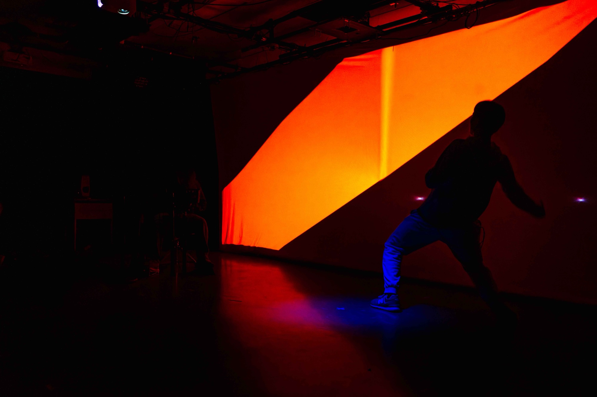
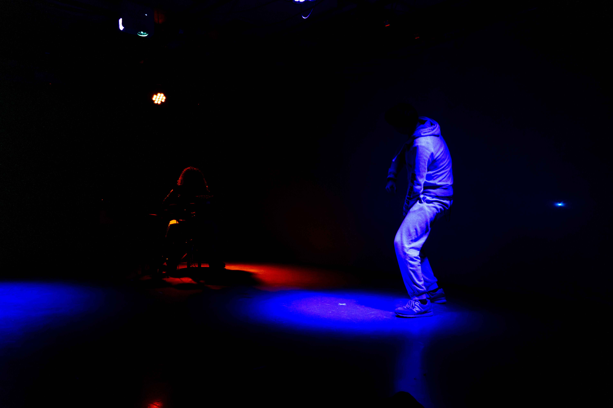
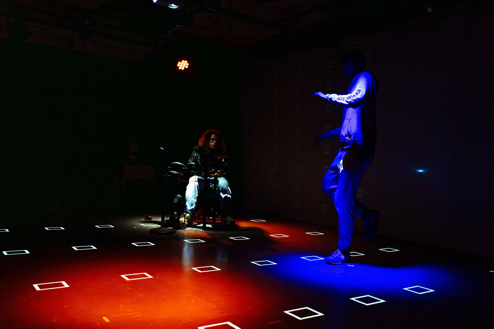
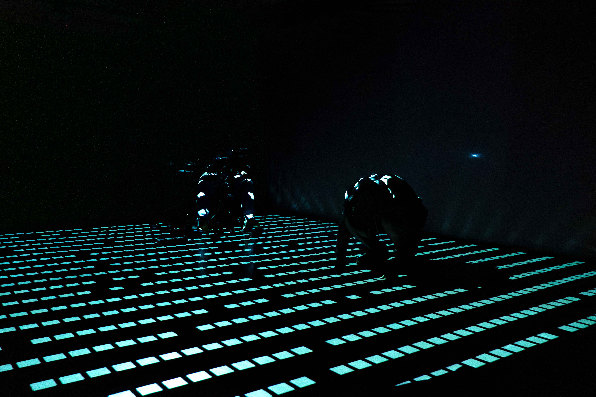
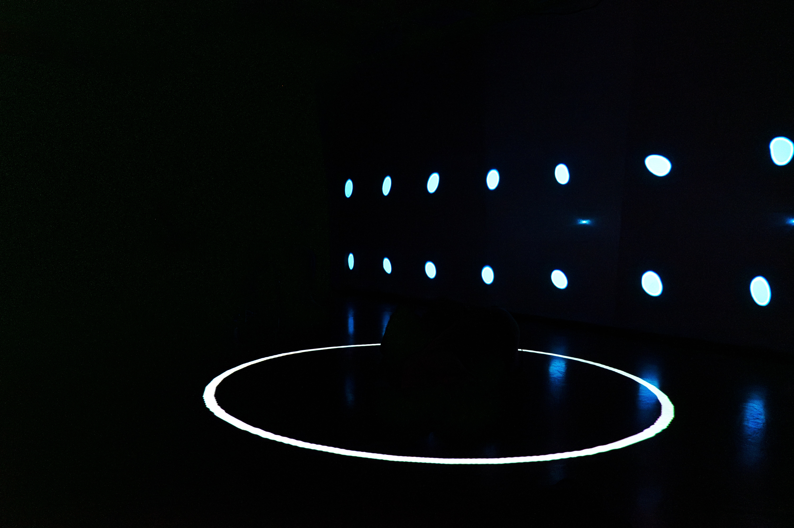
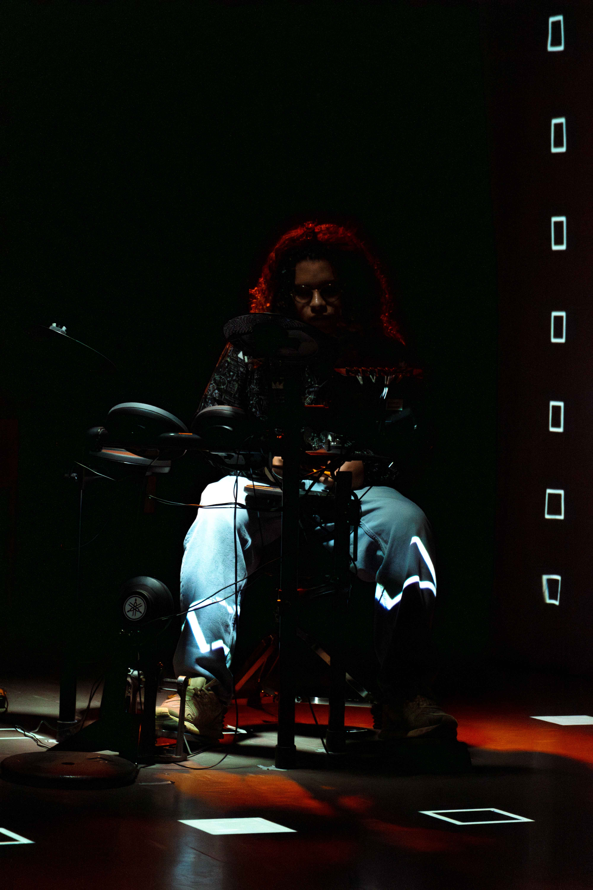
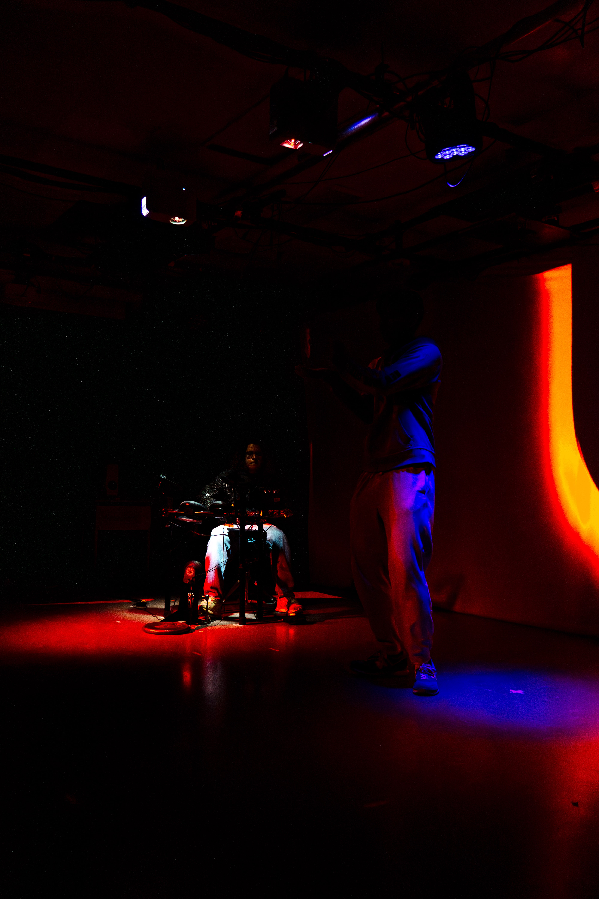

Installations interactives
(20/21)
"Floating On Rocks" est une performance interactive Conceptulisé et créé
par Jean-Christophe Zephir et Meryem Berbiche et Ugo Jutra et Sasha Bédard
Cette installation interactive invite les spectateurs à explorer un dialogue unique entre l'humain et la
technologie.
Dans Floating on Rocks, le dialogue entre rigidité et fluidité prend vie à travers une performance où le
son, le mouvement et l’image se répondent en temps réel. En tant que directeur sonore, mon rôle a été de
concevoir un environnement immersif où chaque élément sonore interagissait dynamiquement avec la
performance.
J’ai sélectionné et conçu une palette sonore percussive, allant de textures brutes et tranchantes à des
sons plus ouverts et expérimentaux, créant ainsi un contraste rythmique qui épousait les variations du
mouvement. Le sound design a été pensé pour évoluer en direct, intégrant des sons de batterie traités et
mixés en temps réel avec la bande sonore, enrichissant l’expérience sensorielle du spectateur.
Un aspect clé de mon travail a été la participation active à l’intégration technologique entre plusieurs
logiciels et ordinateurs, assurant une communication fluide entre les différents systèmes interactifs.
La batterie, connectée en MIDI, influençait en temps réel les visuels projetés, tandis que les capteurs
portés par le danseur faisaient évoluer les visuels.
À travers cette approche, Floating on Rocks dépasse la simple juxtaposition de disciplines pour offrir
une expérience où le son, le mouvement et l’image se fondent en une seule entité, en perpétuelle
évolution.
Un grand merci à nos performeurs : Jory Trabajada à la danse et Andy Martinez Diaz à la batterie
VidéoFloating On Rocks
Images8 photos





